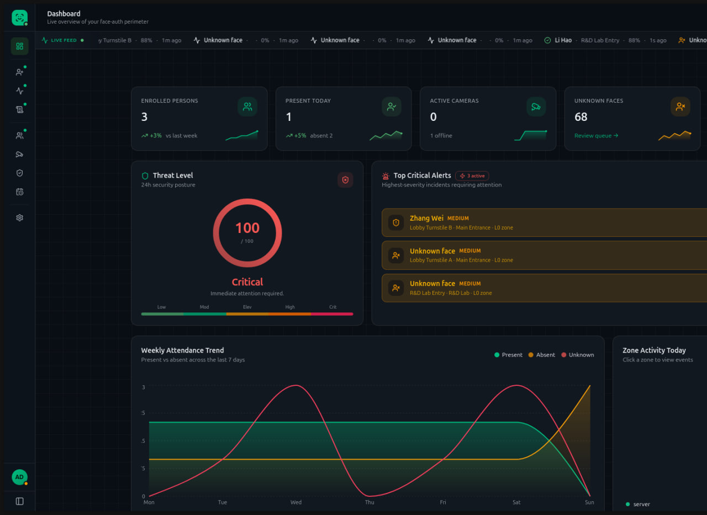

Computer Vision · Automation
Aura
A camera-based attendance platform designed to detect and log presence, absence, and lateness across connected cameras, identify unfamiliar faces, and provide administrative controls for working hours.
Camera-based recognition workflow
Attendance and presence tracking
Administrative configuration
PythonOpenCVTensorFlowSQL
Engineered by Sina